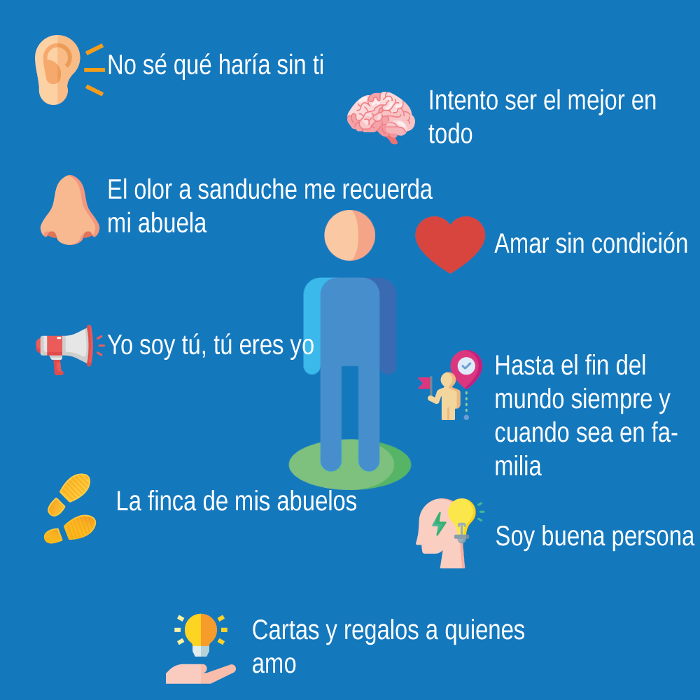
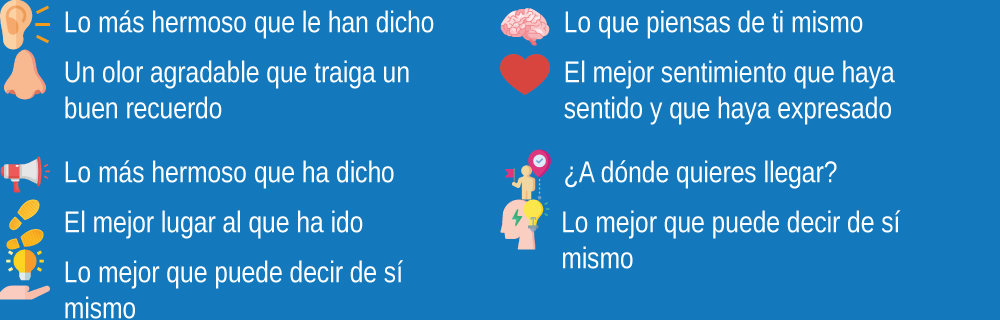

En este portafolio se realizan las reflexiones y los aprendizajes acerca de lo que se va aprendiendo en cada una de las temáticas abordadas en cada encuentro sincronico del curso habilidades blandas que hace parte de la ruta como desarrollador full stack la cual me encuentro realizando, esto permitirá ir fortaleciendo algunas competencias como lo son la comunicación escrita y el pensamiento crítico.
1. ¿quién eres?, ¿quién quieres llegar a ser?, ¿qué quisieras hacer y qué has dejado de hacer para lograr tus metas?.
Empezaré por mi nombre, soy Santiago Ramírez Pérez, tengo 25 años. Soy estudiante de ingeniería eléctrica y programador. En el ámbito personal, soy hijo, novio, primo y amigo. Soy buena persona y por sobre todo soy una persona agradecida.
Antes que ingeniero quiero seguir formándome como una persona integra, seguir creciendo en valores y cada día aprender sobre los errores. A corto plazo quiero titularme como ingeniero y ser reconocido como un gran programador. Quiero ser padre y abuelo y por último me gustaría aprender karate que es algo que, aunque desde hace mucho he querido, no he podido comenzar a hacerlo.
Para lograr mis metas necesito compromiso, sacrificios, pero más importante es la determinación en mi caso, estoy decidido a lograrlo y eso es lo que más me ha llevado a conseguir mis logros.
2. Parte de conocerse a sí mismo también implica conocer las habilidades y destrezas personales, las propias limitaciones, las oportunidades y las amenazas.
3. Autorretrato.

